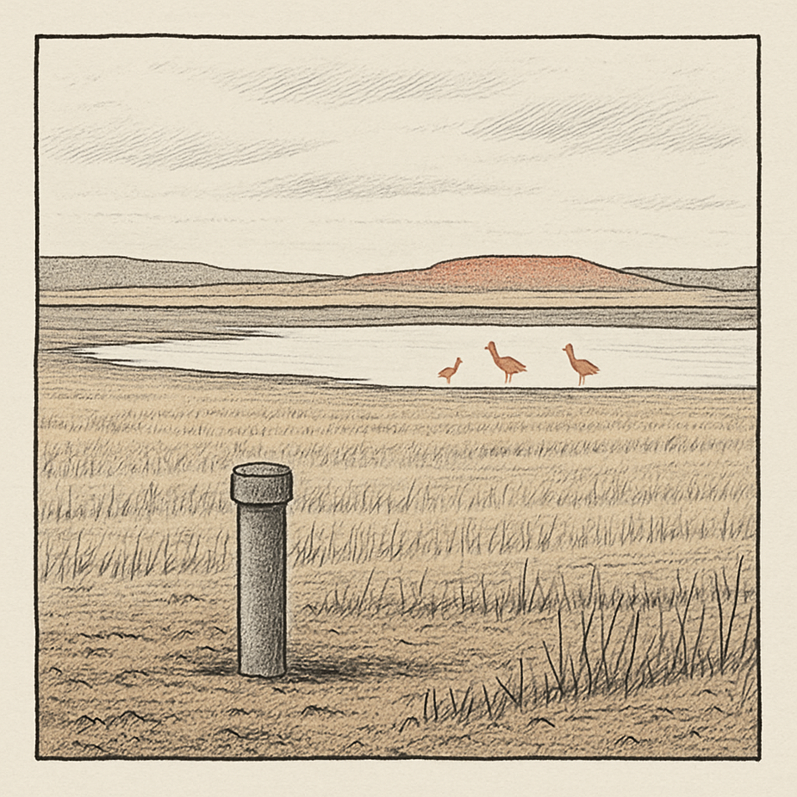

Dos plantas, un acuífero: el agua de Villafáfila que la Confederación autoriza y la comarca discute
La Confederación Hidrográfica del Duero ha autorizado a dos empresas distintas extraer agua del acuífero de las Lagunas de Villafáfila para producir hidrógeno verde en Granja de Moreruela. La administración dice que el impacto es despreciable; ecologistas, ayuntamiento y diputación no están de acuerdo. Reconstrucción documentada de un choque abierto.

Un sondeo de setenta metros en la parcela 882
En el polígono 1 del término de Granja de Moreruela, en la parcela 882, hay un punto que sobre el papel mide 250 milímetros de diámetro y baja setenta metros hacia el subsuelo de Tierra de Campos. No es gran cosa a la vista: un sondeo entubado a 200 milímetros, autorizado para sacar agua de un acuífero que casi nadie ve y del que casi todos dependen. A poco más de diez kilómetros, según la propia Confederación Hidrográfica del Duero, están las Lagunas de Villafáfila, el mayor humedal de Castilla y León, donde en invierno se juntan las avutardas y las aves que cruzan media Europa. Entre ese tubo y esas lagunas está toda la discusión.
La autorización llegó el 8 de enero de 2025, según publicó Enfoque Diario de Zamora. La beneficiaria era Inari Solar, S.L., con sede en Marbella, para una planta de hidrógeno verde de 40 megavatios. El permiso: hasta 117.000,7 metros cúbicos anuales durante 25 años. Un tubo, un número, una fecha. Y una tensión que no ha parado de crecer desde entonces.
La pregunta que sostiene el caso
La pregunta no es si un pozo estropea un humedal de golpe, porque nadie sostiene eso. La pregunta es más incómoda: ¿cuánta agua se puede sacar de un acuífero endorreico, en una zona con 387 milímetros de lluvia media al año según cita la CHD, antes de que el efecto acumulado importe? Y una segunda, que el alcalde de Villafáfila puso sobre la mesa: si ese acuífero es también del que bebe la comarca, ¿quién mide el límite, y con qué datos? En enero de 2025 se hablaba de una planta. En abril de 2026 ya eran dos, con la cifra duplicada. La escala del problema cambió sin que cambiara el paisaje.
Los números que maneja la administración
La versión de la Confederación descansa en tres cifras propias. La primera: la concesión a Inari Solar es de 117.000,7 metros cúbicos al año, con un caudal máximo de 3,8 litros por segundo y medio de 3,71, por 25 años (Enfoque Diario de Zamora, 8 de enero de 2025). La segunda, con la que la CHD respondió a Ecologistas Zamora el 22 de enero de 2025 en el mismo diario: la extracción actual del acuífero ya representa un 12% de sus recursos renovables anuales, y la nueva concesión añade 'menos del 0,1%, lo que se considera poco significativo'. La tercera: el punto de captación está a más de diez kilómetros de las lagunas.
La CHD sostiene además que el Plan Hidrológico no identifica la masa de agua de Villafáfila en mal estado cuantitativo, que la monitoriza con seis mediciones anuales de piezometría oficial y que los niveles no han sufrido descensos significativos. La administración ha defendido su procedimiento con una frase que resume su lógica: 'Si se puede autorizar, se autoriza'. Y sobre la evaluación ambiental ha mantenido que las actuaciones 'no supondrán afecciones significativas sobre los citados valores naturales, siempre que se cumplan las medidas ambientales propuestas'. Se reserva, eso sí, la potestad de limitar la extracción en caso de sequía (El Salto, 12 de febrero de 2025).
Hay un detalle técnico que conviene no perder: según el artículo de enero de 2025, el proceso usa aproximadamente la mitad del agua captada, y la otra mitad se desecha por ósmosis inversa y se vierte al arroyo Valdecoso. Y un límite que este medio no puede saltar: los dos porcentajes clave, el 12% ya extraído y el 0,1% que se añade, son cifras de la propia CHD. En las fuentes consultadas no aparece una medición independiente, ajena tanto a la administración como a los ecologistas, del estado real del acuífero.
Dos empresas, no una: cómo se duplicó la cifra
Aquí hay que aclarar algo que la hemeroteca dejó turbio durante un año. En febrero de 2025, El Salto atribuía la planta a 'UTU Solar SL', mientras Enfoque Diario de Zamora y Climática atribuían esa misma primera autorización a 'Inari Solar S.L.'. Podía parecer una confusión de nombre. No lo era. El 6 y 7 de abril de 2026, Enfoque Diario de Zamora informó de que la Junta de Castilla y León, a través de la Consejería de Medio Ambiente, había autorizado una segunda planta de hidrógeno verde en el mismo entorno, esta sí promovida por UTU Solar, con la misma cifra de extracción: 117.000 metros cúbicos anuales.
Son, por tanto, dos empresas distintas, dos plantas y dos autorizaciones. Sumadas, la extracción autorizada del acuífero de Villafáfila asciende a 223.920 metros cúbicos al año. La cifra que circuló en enero de 2025 se ha duplicado, y es la actualización más reciente y relevante del caso. Todo lo que en 2025 se discutió sobre una concesión hay que releerlo ahora sabiendo que son dos las que pesan sobre el mismo subsuelo.
Lo que dicen aquí: ecologistas, alcalde y diputación
Villafáfila y Granja de Moreruela son municipios de Tierra de Campos, aunque no estén entre los pilotos que este periódico sigue de cerca. Eso no rebaja la discusión: la elevó a manifestación. El 23 de febrero de 2025 hubo una concentración en Zamora capital contra la extracción, y una petición en Change.org superó las 7.000 firmas a mediados de febrero (Enfoque Diario de Zamora, El Salto, Xataka). Ecologistas Zamora habló de 'ecocidio inminente' (Tribuna de Zamora) y advirtió de posibles responsabilidades penales para la CHD si hay daño a la reserva (El Español, 21 de enero de 2025).
El argumento de fondo de los ecologistas no niega la aritmética de la CHD, la reencuadra: trivializar con porcentajes anuales oculta el acumulado. Según El Salto (febrero de 2025), ese 0,1% anual podría suponer una extracción del orden del 20% en dos décadas si se mantiene el ritmo de nuevas concesiones. Alberto Zamorano, de Ecologistas Zamora, lo llamó en Climática (24 de febrero de 2025) un 'proyecto extractivista' sin 'ningún impacto positivo económico para la zona'. UPL interpuso recurso de reposición contra la autorización y alertó a instancias internacionales invocando el Convenio de Ramsar (zamoranews.com, 21 de enero de 2025). Manuel Herrero, de UPL, resumió el temor: 'Si se extrae agua de un espacio protegido, ¿de dónde no se va a sacar agua en Zamora?'.
Lo más revelador vino de las instituciones que no encajan en el molde ecologista puro. Javier Faúndez, presidente de la Diputación de Zamora, dijo en enero de 2025 que la Diputación apoya las plantas de hidrógeno verde en la comarca 'porque crea empleo y riqueza en el medio rural', pero se manifiesta 'en contra de que para la producción de hidrógeno verde se extraiga el agua del acuífero de la Reserva de Las Lagunas de Villafáfila'. No es un no a la industria, es un no al origen del agua.
Y está el ángulo que más incomoda. Antonio Rodríguez, alcalde de Villafáfila, alertó en enero de 2025 (Enfoque Diario de Zamora, 21 de enero) de que el acuífero del que se extrae para las plantas es el mismo del que bebe la comarca. 'Se ha autorizado una captación en un sitio muy comprometido y no sabemos lo que va a pasar', dijo, denunciando 'poca transparencia'. Y añadió una comparación que escuece en Tierra de Campos: a los agricultores se les restringe el riego mientras la misma CHD 'que ahora ha acelerado tanto los plazos' es la que normalmente 'eterniza los procesos' con ellos.
El límite del relato ecologista
Conviene no comprar entera ninguna de las dos versiones. El argumento del acumulado del 20% en dos décadas depende de un supuesto explícito: que se mantenga el ritmo de nuevas concesiones. Es una proyección, no una medición, y la propia fuente lo plantea como escenario condicionado. Frente a eso, la CHD ofrece un dato verificable en principio, la piezometría oficial de seis mediciones anuales, y una salvaguarda concreta, la potestad de limitar la extracción en sequía. Nada de esto zanja la duda, porque no hay una tercera medición independiente que arbitre entre ambos, pero obliga a matizar: quien afirme hoy que el acuífero se está vaciando lo hace sin un dato neutral que lo respalde, igual que quien afirme que no pasa nada se apoya solo en cifras del propio autorizante. El caso no está resuelto ni técnica ni judicialmente: en la última cobertura encontrada, los recursos de UPL y Ecologistas seguían sin desenlace conocido.
Vuelta al tubo
El sondeo de la parcela 882 sigue ahí, con sus setenta metros y sus 200 milímetros entubados, ahora acompañado por la sombra de una segunda planta que dobla la cifra. Del agua que suba, la mitad servirá para hacer hidrógeno y la otra mitad se irá por ósmosis al arroyo Valdecoso. A diez kilómetros, las lagunas esperan la lluvia de un año que ronda los 387 milímetros de media. En enero de 2025 la comarca discutía un permiso; en abril de 2026, dos. Nadie de fuera de la administración y de fuera de los ecologistas ha medido todavía qué le pasa realmente al acuífero mientras se discute. La pregunta del alcalde sigue sin respuesta pública: si de aquí sale el agua de las plantas y también el agua de boca, ¿quién decide cuál pesa más cuando llegue un año seco?
- Enfoque Diario de Zamora (enfoquezamora.com), 2025-01-08
- Enfoque Diario de Zamora, 2025-01-21
- Enfoque Diario de Zamora, 2025-01-22
- Enfoque Diario de Zamora, 2026-04-06/07
- El Salto, 2025-02-12/14
- Climática, 2025-02-24
- Xataka, 2025-02-14
- El Español, 2025-01-21
- zamoranews.com, 2025-01-21
- Tribuna de Zamora
- Comunicado Diputación de Zamora (diputaciondezamora.es), enero 2025